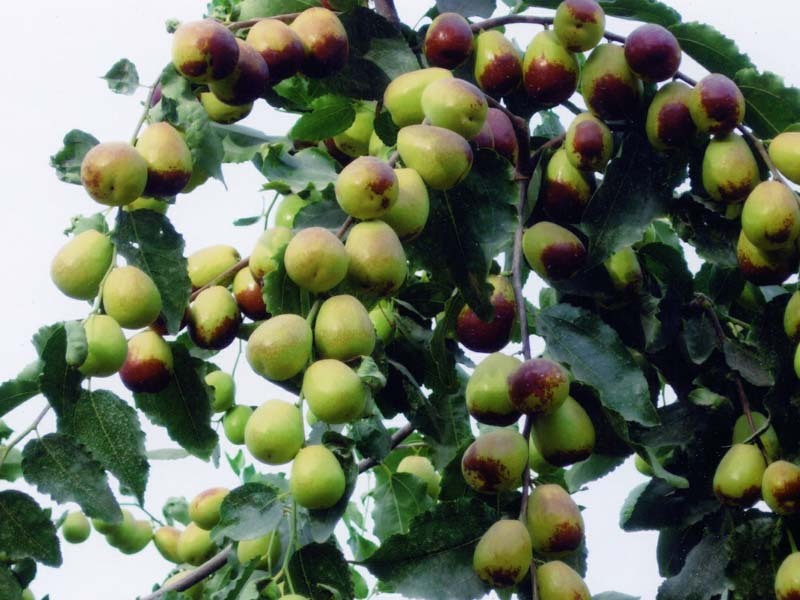
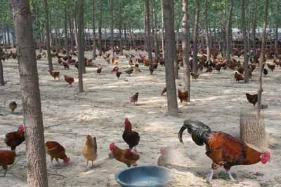

自然资源
矿产资源
截止到2010年，赞皇县已发现的矿产资源共有30种，主要有石英砂岩、石灰石、花岗岩、磁铁矿、陶土、大理石等，总储量约60亿吨。其中石英砂岩储量约10亿吨，品位高达98%以上，是国内少有的符合国际质量标准的大型优质石英砂岩矿藏，已被国家建材局确定为北方玻璃生产原料基地；石灰石已探明b+c+d级储量2亿吨，矿石碱性氧化物含量低，钾钠含量在0.2%以下，是少有的生产高标号代碱水泥的大型优质原料矿；花岗岩矿储量在2亿立方米以上，有赞皇红、中华豹、满天星、万年青等30多个品种；优质矿泉水含锶0.4毫克以上，是制作饮料的理想资源。 ...

植物资源
天然次生林的主要树种有：槲栎、槲树、辽东栎、栓皮栎、胡桃楸、椴树、五角枫、鹅耳枥、山桃、山杏、丁香、小叶朴、卫矛、吴荣萸等；沟谷坡脚有核桃、板栗、漆树、山柳、山桑、杨树等；灌木、藤本主要有黄栌、胡枝子、六道木、绣线菊、紫荆、山葡萄、锦鸡儿等。 人工林主要为油松、杨、柳、椿；经济林木为栎、椴、漆树，并有核桃、板栗、杏、柿、黑枣、苹果、梨、花椒等干鲜果木。还有党参、元胡、天麻、黄精、刺五加等珍贵药材；菌类有天然灵芝；自然生长的大面积观赏花木有山桃、山杏、杜鹃、五角枫、黄栌等。棋盘山独有或他处少有的珍贵树种有紫椴、青檀、黄檗、蛇杨以及翅卫矛、猕猴桃。野生植物计100科601种（2010年）。
动物资源
赞皇有野猪、獾、狸、狐狸、野兔、黄羊、黑鹳、雉、蛇类等，计39科113种。昆虫类有324种。由于植被茂密，自然生态逐步恢复，有人曾发现了太行猕猴等珍贵野生动物..
